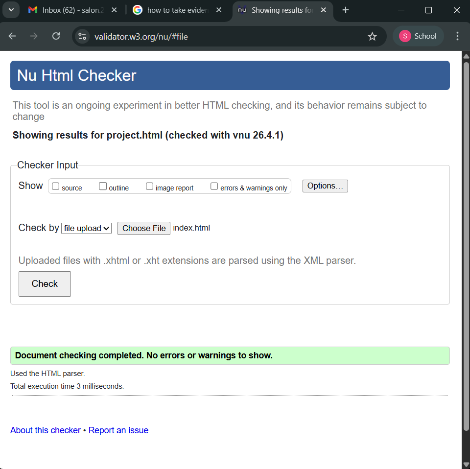
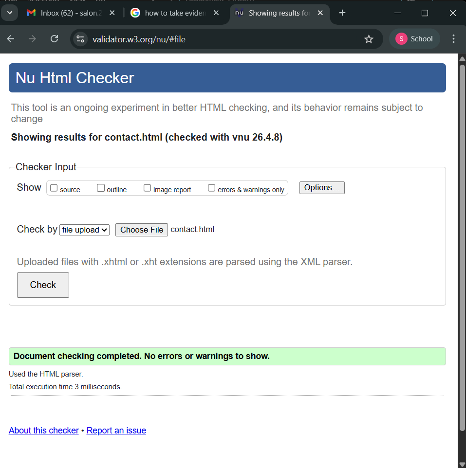
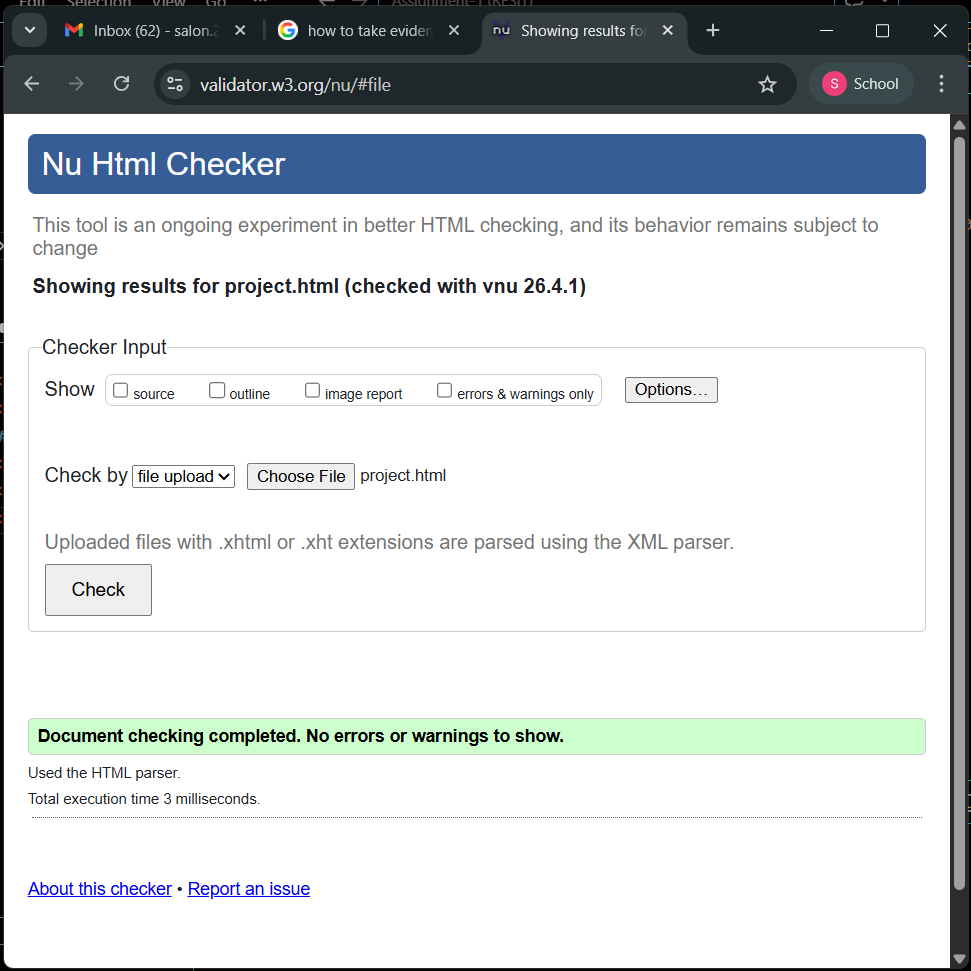
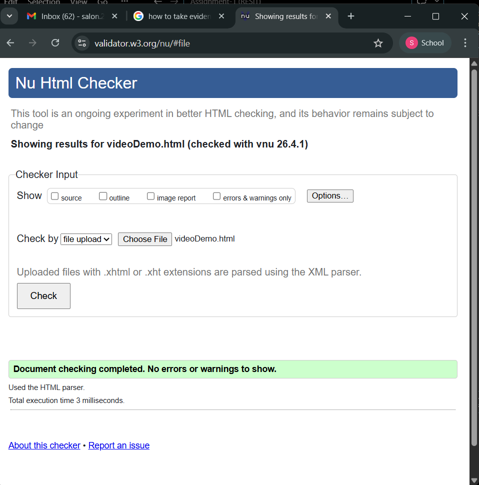
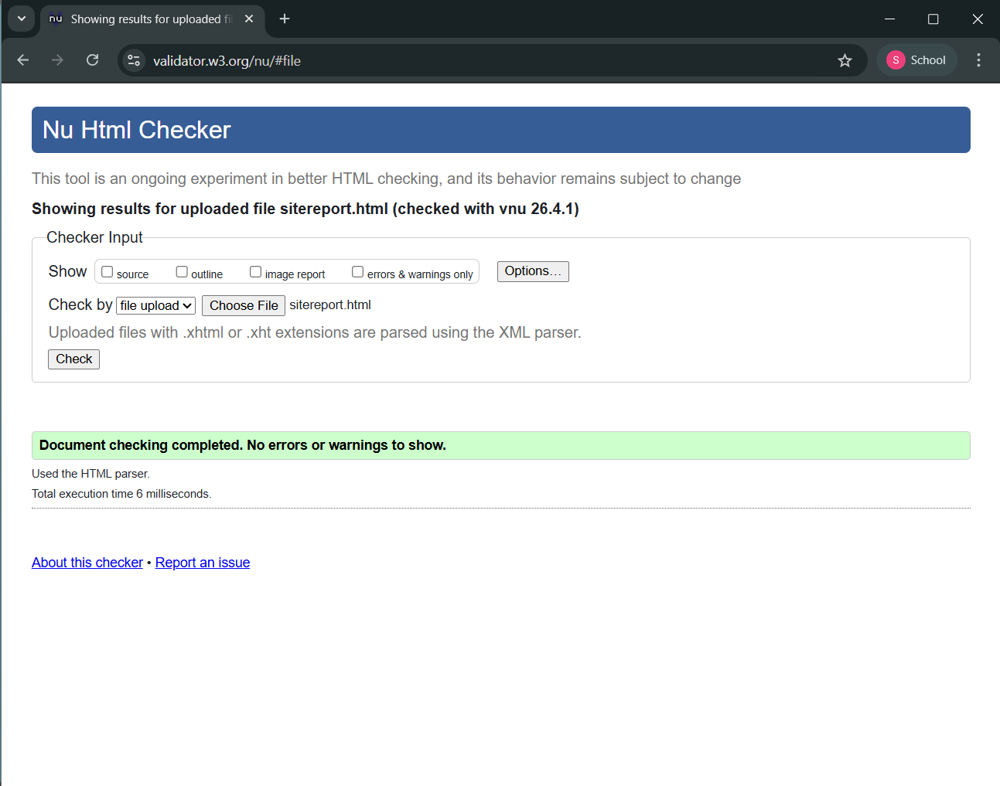

Table of content
Site-report
This project was more difficult than I expected and took multiple rounds of trial and error to complete. Throughout the process, there were many things I originally planned to include but ended up omitting because they were too complicated to achieve using only basic HTML and CSS.
One of the biggest challenges was developing the contact page. I had trouble with both the HTML and CSS, and I had to go through many iterations of the same design just to reach an acceptable result. This wasn’t just limited to the contact page; the entire project felt like a conflict between what I had designed in my head and what the actual output looked like. Because of that, I had to make constant adjustments and compromises to get something that worked.
After realizing the gap between my expectations and the actual results, I changed my workflow. Instead of focusing on design first, I started by building the overall structure and functionality of all the pages, then worked on the visual design afterward. This made the process more manageable. I also decided to keep the design simple, since anything more complex would have taken too much time and become demotivating.
For the design, I looked up complementary color palettes and chose a green and yellow combination. At first, it was only meant for the initial phase, but over time I started to like the atmosphere it created, so I kept it as the main theme. For fonts, I stuck with the default since there wasn’t anything in my design that really required a more stylized option.
Most of my time went into maintaining a simple and scalable structure and making sure everything functioned properly. I didn’t try to make the website overly complex or unique, and instead focused on keeping it clean and manageable. Although I did use references from an artist I like, I didn’t rely on them much and mainly used them as general inspiration for what I wanted my portfolio to be.
By the end of the project, I feel like there’s still a lot more I could do. It left me with a sense of wanting more, and a bit of dissatisfaction with what I’ve made so far, but in a good way. It motivates me to keep improving and adding more features in the future.
Validation
Index

Contact

Project

Video Demo

Site Report
